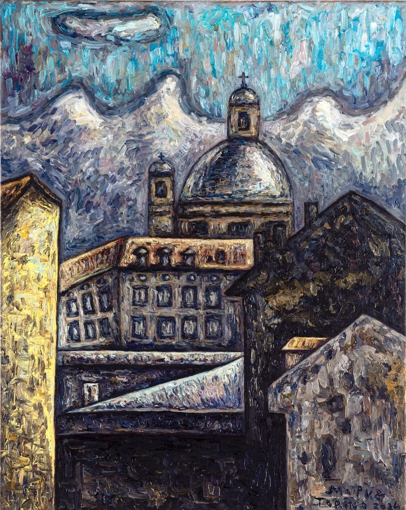
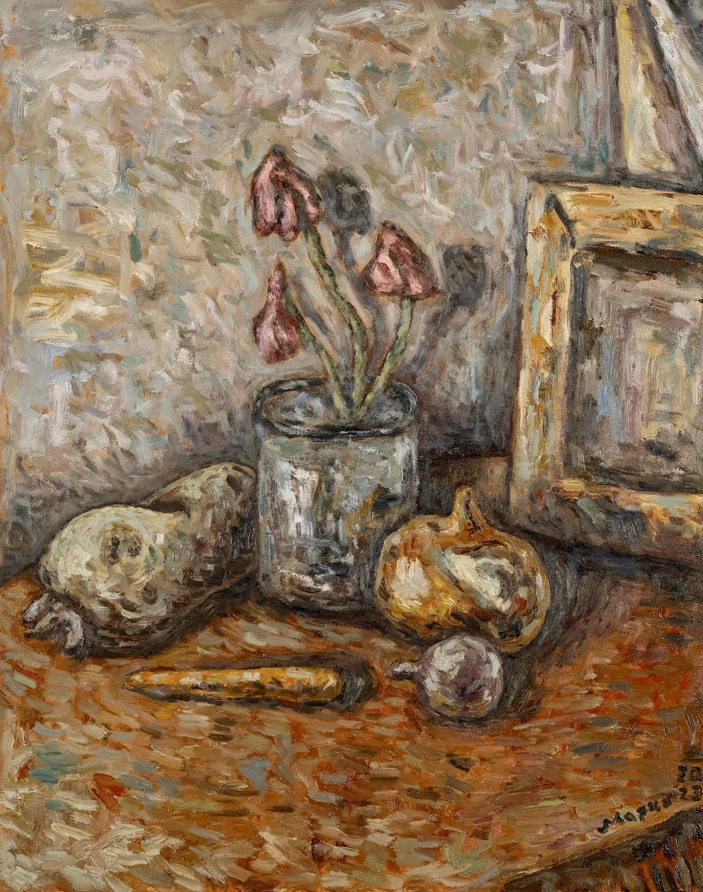
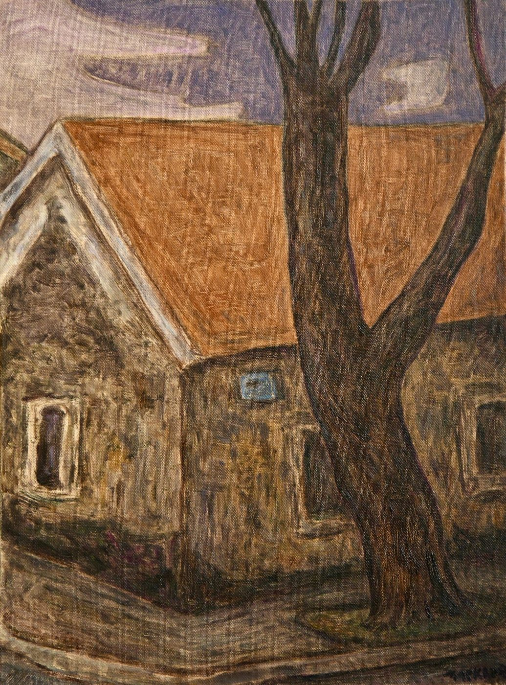

Turin Landscapes
The city where he completed his postgraduate studies: rooftops, domes, squares and the bridges over the Po. The sky is never still — thick, swirling strokes of blue and white carry as much weight as the architecture.

Cetinje · Turin · Lavis
Oil on canvas in thick, swirling strokes: the rooftops and squares of Turin, the quiet of the studio and reveries of his native Cetinje.

Marko Dumnić was born in Cetinje, Montenegro, in 1993. He completed his undergraduate studies at the Faculty of Fine Arts in Cetinje (2015–2018) and, in 2018, spent time at the Accademia di Belle Arti di Macerata as an Erasmus+ student.
He went on to complete postgraduate studies in painting at the Accademia Albertina di Belle Arti in Turin (2020–2023). He lives and works in Cetinje and in Lavis, near Trento, in Italy. He paints in oil on canvas, in three series — Turin Landscapes, Glimpses from the Studio and Hometown Reveries.
“The quietest part of the work is the part where nothing is done — one simply looks.”
The city where he completed his postgraduate studies: rooftops, domes, squares and the bridges over the Po. The sky is never still — thick, swirling strokes of blue and white carry as much weight as the architecture.

Still lifes and scenes from the studio table: vases, bottles, flowers, frames leaning against the wall, and Kastro the dog asleep among the cushions. Everyday objects, looked at long enough to become a painting.

Cetinje remembered and seen up close: stone houses, the old cemetery, meadows and bare trees in the morning light and at dusk. The most recent series, made between Cetinje and Italy.

A selection of the works is hung in a 3D space that you can walk through like a real room — each painting on the wall at its true size and height. The space loads only when you ask for it, and on slower connections a simple two-dimensional view remains available.
For enquiries about purchasing works, exhibitions and collaborations. You can compose a message below, write directly by email or get in touch on Instagram.
For enquiries about purchasing works, exhibitions and collaborations. Please get in touch by email or on Instagram.
The form requires JavaScript
The site has no server to receive messages — the form is put together by a script in your browser, so it cannot work without JavaScript. Please get in touch directly:
Or enable JavaScript and reload the page.
The form is not connected to a server, so the message does not leave the site — the button simply opens your email application. If you do not have one set up, please write directly to mfnlulu@gmail.com.